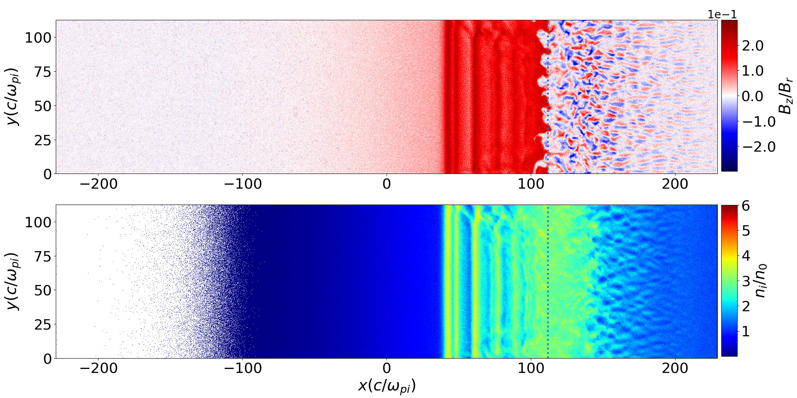

Collisionless shocks are ubiquitous in the Universe as a consequence of supersonic plasma flows sweeping through interstellar and intergalactic media. These shocks are the cause of many observed astrophysical phenomena, but details of shock structure and behavior remain controversial because of the lack of ways to study them experimentally. Laboratory experiments reported here, with astrophysically relevant plasma parameters, demonstrate for the first time the formation of a quasiperpendicular magnetized collisionless shock. In the upstream it is fringed by a filamented turbulent region, a rudiment for a secondary Weibel-driven shock. This turbulent structure is found responsible for electron acceleration to energies exceeding the average energy by two orders of magnitude.
Our methodology followed these steps:
(a) Side-on view of the experiment from the proton imager. (b) Side-on radiographs sampled at four different times.
Magnetic field (top) and ion density (left) at time t = 1118 ωpi in simulations.
We study with 1D PIC simulations the expansion of a dense plasma into a dilute one for density ratios 2.5 ≤ α ≤ 20. Both are unmagnetized and consist of electrons and protons. Shocks form in all cases. We determine how α affects the speed of the shock, that of the trailing velocity plateau and the proton beam instabilities in its upstream region. The speed of the velocity plateau relative to the upstream plasma increases significantly with α. Faster shocks reflect more upstream protons and fewer protons make it downstream, which slows down the shock in the downstream frame. This slow-down reduces noticably the increase with α of the shock speed in the upstream frame. All simulations demonstrate that an ion acoustic instability develops between the shock-reflected proton beam and the ambient protons. We solve the linear dispersion relation for ion acoustic waves that have wave vectors which are parallel to the beam velocity vector. Upstream conditions, for which their growth rate is largest, lead to the most unstable upstream plasmas also in the simulation. Even though linear theory predicts the growth of sine waves, which reach a small amplitude in the simulations, solitary waves become the dominant ones upstream of the shock. They enforce the formation of new shocks and ion phase space vortices. We discuss the relevance of our findings to laser-plasma experiments.
Our methodology followed these steps:
Proton phase space density distribution (x, vx) at t = 14.2 × 104 for α = 2.5 (a), α = 5 (b), α = 10 (c), α = 15 (d), α = 20 (e), in the rest frame of the simulation box.
(Click on the picture to get the Movie)
The self-similar dynamics of the collision between radiative and adiabatic supersonic planar flows are performed assuming homogeneous radiation cooling. New self-similar solutions relevant to both astrophysical objects and laboratory experiments are derived. Numerical simulations investigate the formation of the radiative cooling shock in the interstellar medium and laboratory Xenon plasma to demonstrate the self-similarity of the interaction in the special case of balanced ram pressure. When the radiation cooling is inhomogeneous, the flow can become thermally unstable and deviate from the self-similar solution.
Our methodology followed these steps:
Evolution over time of plasma density profiles for the stable simulations in (a) astrophysical and (b) laboratory conditions. Panel (c) shows the time evolution of the radiative shock front (green) and the contact discontinuity accelerations (red). The accelerations Γrad and Γc in Equation (18) are illustrated by vertical black lines. The solid and dashed lines denote the astrophysical and the laboratory simulations, respectively.